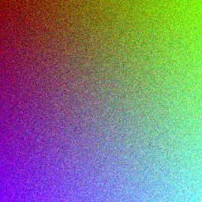
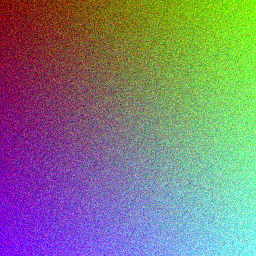
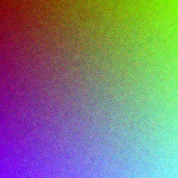
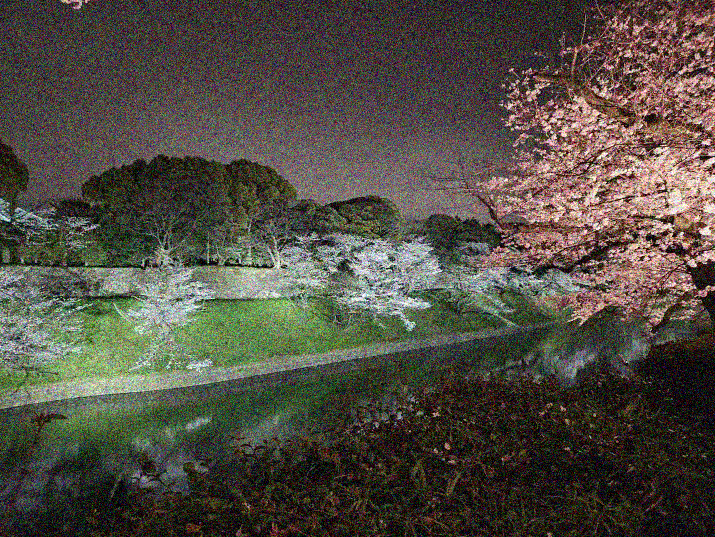

コンピュータグラフィクス論 基本課題I1
05-231027 森裕淳
バイラテラルフィルタの実装をPythonでしました.
バイラテラルフィルタについて
フィルタリングの基本的な原理は各画素の近傍で
適当に重みづけをした平均をとることで, 画像全体を滑らかにするというものです.
Bilateral filterではその重みづけとして各画素からの距離が近いほど,
また画素が近いほど大きい重みを割り当てるようにします.
より正確にいえば, 注目画素\(\vec{x}\)の近傍\(\vec{y}\)に\(\vec{x}\)の平均化に際して
割り当てられる重み\(\vec{y}\)は\(\vec{x},\vec{y}\)の画素値を\(f(\vec{x}),f(\vec{y})\)と実数値ベクトルで書いたとき,
次式で与えられます.
$$\exp(-\frac{\|{\vec{x}-\vec{y}}\|^2}{2\sigma_d^2})\exp(-\frac{\|{f(\vec{x})-f(\vec{y})}\|^2}{2\sigma_r^2})$$
ここで, \(\|{\cdot}\|\)は\(\ell_2\)-ノルムを表し,
\(\sigma_d,\sigma_r\)がハイパーパラメータになります.
これらのパラメータは大まかに言って距離や画素値の違いをどれくらい考慮するのかを表します.
式から明らかなように\(\sigma_d,\sigma_r\)の値が高いほど距離, 画素値が近いものにより大きい寄与を与えるようになります.
実装したコード
import numpy as np
import cv2
# m, n : フィルタリングに影響する範囲, m が row, n が column
# sigma_d, sigma_r: ガウシアンの分散
def bilateral_filter(image, m, n, sigma_d, sigma_r):
image = image.astype(np.float64)
# 画像サイズの取得
rows, cols, _ = image.shape
# 出力の初期化
filtered = np.zeros_like(image)
# フィルタリング
for i in range(rows):
for j in range(cols):
# 各ピクセルでの色を取得
colors = image[i][j]
# bilateral filter のフィルタリングの式の分母・分子
numerator = 0
denominator = 0
# 各ピクセルでのフィルタリング
for k in range(max(0,i-m), min(rows,i+m+1)):
for l in range(max(0,j-n), min(cols,j+n+1)):
neighbor = image[k][l]
dist = np.exp(-(((k-i)**2 + (l-j)**2)/(2*sigma_d**2)))
diff = np.exp(-(np.linalg.norm(neighbor - colors)**2/(2*sigma_r**2)))
weight = dist * diff
numerator += weight * neighbor
denominator += weight
filtered[i][j] = (numerator / denominator)
return filtered.astype(np.uint8)
def test(path):
image = cv2.imread(path)
m, n = 5, 5
sigma_d, sigma_r = 30, 5
filtered = bilateral_filter(image, m, n, sigma_d, sigma_r)
cv2.imshow("Original", image)
cv2.imshow("Filtered", filtered)
cv2.imshow("Library", cv2.bilateralFilter(image, m, sigma_d, sigma_r))
cv2.waitKey(0)
cv2.destroyAllWindows()
いくつかの例
人工的に生成した画像と個人的に撮影した画像にノイズを加えたものをそれぞれでバイラテラルフィルタを適用してみました.
-

もと画像
-

\(\sigma_d=\sigma_r=5.0\)
-

\(\sigma_d=\sigma_r=30.0\)
-

もと画像
-
\(\sigma_d=\sigma_r=3.0\)